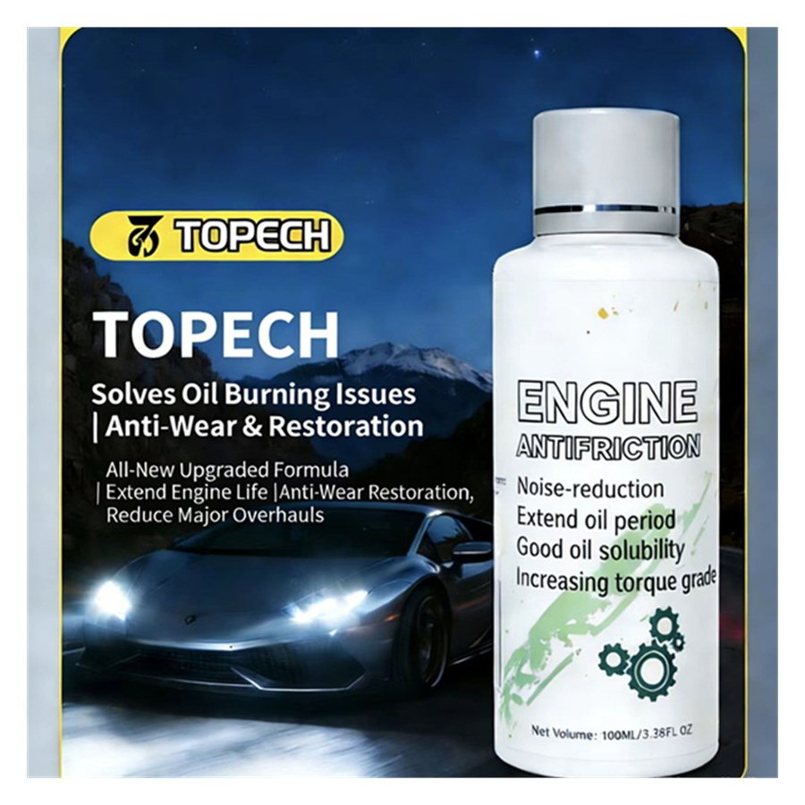

| Appearance | Brown green |
|---|---|
| Viscosity 40 °C | 33.5 mm²/s |
| Viscosity 100 °C | 7.0 mm²/s |
| Flash Point | 200 °C |
| Pour Point | -24 °C |
| PB (3%) | 120 kg |
| Long-Term Grinding D (40 kg, 60 min) | 0.37 mm |
| Recommended Dosage | 3% |
| Solubility | Class I / II / III base oils and PAO |
| Packing | 100 ml bottle; net 25 kg or 200 kg drums |
| Storage | Per SH 0164; max 75 °C handling, 45 °C long-term storage |
Boost anti-wear and fuel-economy performance of passenger car motor oils.
Protect heavily loaded wind power gearboxes against micropitting and wear.
Extreme-pressure lubrication upgrade for greases and drilling muds.
Self-repairing and oil-burning relief effects support aftermarket treatment products.
Buy straight from the manufacturer. Competitive wholesale pricing for distributors, labs and bulk orders — OEM labeling available.
Designed and tested against ASTM, GB/T, SH/T and ISO methods for reliable, repeatable oil product quality assurance.
Export-grade wooden case packaging with worldwide delivery via air / sea freight. Sample units ship within 3–5 business days.
Operation manuals, test videos and remote engineering support for the entire product lifecycle from our technical team.